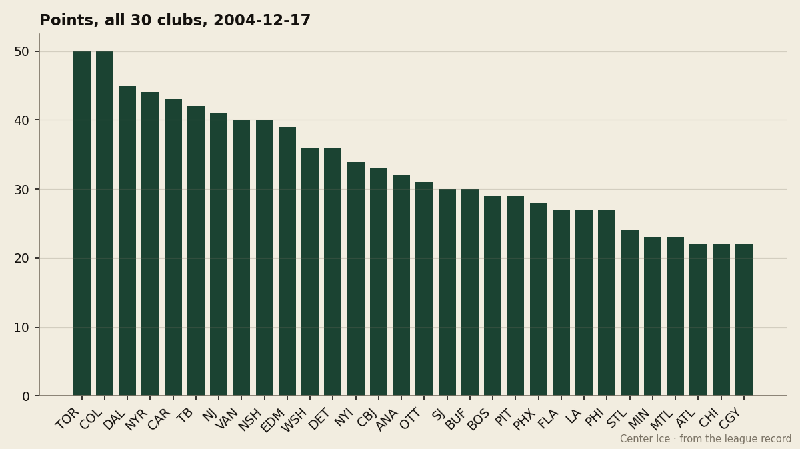

NYR
NYR CAR
CAR TB
TBThe Blaine Rankings, Week 5: the streak is over, and the standings barely moved
Toronto's 14-game win streak ends in Atlanta, but the top three are still separated by 5 points, and the middle is where the real race is.
 Howard BlaineSenior writer, The Blaine Rankings · The Hockey Gazette
Howard BlaineSenior writer, The Blaine Rankings · The Hockey Gazette
The 14 is over. The  Toronto Maple Leafs Maple Leafs fell 7-3 in Atlanta on Thursday, and the longest winning streak in the franchise's modern era is a number in the record book. Jiri Fischer told The Tunnel's Jan Kowalczyk last week that nobody in the room counts, and the room believed him.
Toronto Maple Leafs Maple Leafs fell 7-3 in Atlanta on Thursday, and the longest winning streak in the franchise's modern era is a number in the record book. Jiri Fischer told The Tunnel's Jan Kowalczyk last week that nobody in the room counts, and the room believed him.
But the standings barely moved. Toronto is still 50 points in 31 games.  Colorado Avalanche is still 50 in 30.
Colorado Avalanche is still 50 in 30.  Dallas Stars is 45 in 32 and has won 9 straight. The gap at the top is 5 points between the leaders and Dallas. The question is whether the top three pull away, or whether the seven clubs between 39 and 44 points close the distance over the remaining 50 games.
Dallas Stars is 45 in 32 and has won 9 straight. The gap at the top is 5 points between the leaders and Dallas. The question is whether the top three pull away, or whether the seven clubs between 39 and 44 points close the distance over the remaining 50 games.
The top is a three-horse race with a 5-point spread

| Club | GP | W | L | OTL | Pts | GF | GA |
|---|---|---|---|---|---|---|---|
| TOR | 31 | 23 | 6 | 0 | 50 | 186 | 93 |
| COL | 30 | 23 | 4 | 2 | 50 | 151 | 87 |
| DAL | 32 | 19 | 9 | 1 | 45 | 143 | 109 |
| NYR | 33 | 16 | 9 | 4 | 44 | 141 | 128 |
| CAR | 32 | 12 | 7 | 7 | 43 | 133 | 126 |
| TB | 31 | 16 | 9 | 2 | 42 | 120 | 105 |
| NJ | 28 | 15 | 6 | 3 | 41 | 109 | 88 |
| VAN | 31 | 16 | 9 | 4 | 40 | 128 | 112 |
| NSH | 30 | 15 | 8 | 4 | 40 | 119 | 106 |
| EDM | 31 | 11 | 11 | 1 | 39 | 119 | 130 |
Toronto's 186 goals for and 93 against are the best in the league, and the margin over Colorado (151 for, 87 against) is a number that does not change because of a 7-3 loss in a division that is 7-18-2.  David Aebischer86 told The Tunnel after the 4-0 shutout of New York on Dec 6 that the room does not celebrate, that the veterans have played this game before, and that December is long.
David Aebischer86 told The Tunnel after the 4-0 shutout of New York on Dec 6 that the room does not celebrate, that the veterans have played this game before, and that December is long.
Colorado's 50 points come with a different shape: 151 goals for, 87 against, and a road record of 14-2, the best in the league.  Peter Forsberg95 has 66 points,
Peter Forsberg95 has 66 points,  Milan Hejduk89 has 63, and
Milan Hejduk89 has 63, and  Teemu Selanne85 has 52. The depth behind the top two sets Colorado apart.
Teemu Selanne85 has 52. The depth behind the top two sets Colorado apart.
Dallas is the third force, and the 9-game win streak is the thing to watch. The cost per point is $1.49M, the fourth cheapest among the top five.  Bill Guerin85 has 72 points in 32 games and
Bill Guerin85 has 72 points in 32 games and  Mike Modano86 has 62 in 28, and both are 34 years old.
Mike Modano86 has 62 in 28, and both are 34 years old.
The middle is the race
Seven clubs sit between 39 and 44 points, and the playoff picture will be drawn in that stretch. New York is 44 and 16-9-4, but the last 10 games show 46 goals for and 43 against, a goal differential that is more even than the point total suggests. Carolina is 43 with 7 overtime losses, the most in the league, and a 12-5 home record. Tampa is 42 on a 4-game win streak, 11-7 on the road, and the cheapest point in the East at $1.09M.
 Nashville Predators is still the fourth team in the West, as identified last week. The 7-game win streak is intact, the road record is 10-7, and 40 points in 30 games will put them in the conversation by February.
Nashville Predators is still the fourth team in the West, as identified last week. The 7-game win streak is intact, the road record is 10-7, and 40 points in 30 games will put them in the conversation by February.  Vancouver Canucks is also 40, on a 1-game win streak, and 11-5 at home. The gap between fifth and eighth in the West is 1 point.
Vancouver Canucks is also 40, on a 1-game win streak, and 11-5 at home. The gap between fifth and eighth in the West is 1 point.
The bottom is not close
 Chicago Blackhawks is 22 points in 31 games and has lost 10 straight. The goal record is 99 for, 128 against.
Chicago Blackhawks is 22 points in 31 games and has lost 10 straight. The goal record is 99 for, 128 against.  Montreal Canadiens is 23 and has lost 4 in a row.
Montreal Canadiens is 23 and has lost 4 in a row.  Calgary Flames is 22 and has lost 6. These three clubs are well behind the playoff picture at the quarter mark, and the gap will only widen over the next 50 games.
Calgary Flames is 22 and has lost 6. These three clubs are well behind the playoff picture at the quarter mark, and the gap will only widen over the next 50 games.
The standings at Christmas are the standings in April. Right now, with 50 games left and a 5-point gap at the top, the Christmas standings are the April standings for the first three clubs. The question is who is fourth, and the answer is not settled.